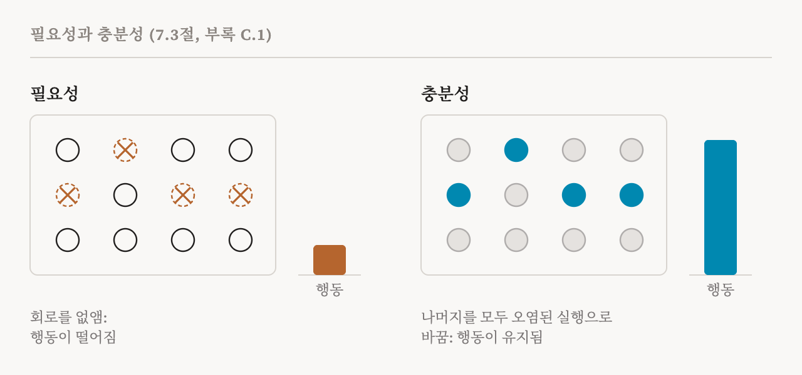
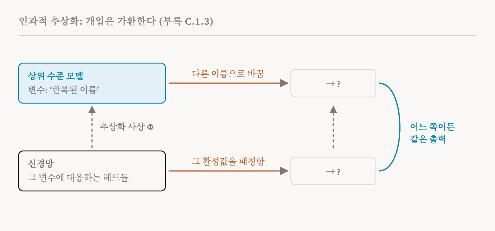

16편과 17편은 회로를 찾는 방법을 설명했습니다. 거기 나온 모든 방법은 후보를 내놓습니다. 어떤 행동을 수행한다고 주장하는 구성 요소나 특징의 집합과 그 사이의 연결입니다. 이번 편은 이 책의 7.3절(57쪽)과, 이 책이 끝에 붙인 인과적 추론에 관한 짧은 부록(180쪽)을 다룹니다. 어떤 후보 회로에 대해서든 두 가지를 묻습니다. 그 회로가 정말로 그 행동에 인과적 책임이 있는가? 그리고 그 회로를 통해 행동을 믿을 만하게 바꿀 수 있는가?
필요성과 충분성
이 책의 부록은 두 가지 기본 시험을 한 줄씩으로 적습니다. 어떤 구성 요소를 없앴을 때 행동이 사라지면, 그 구성 요소는 그 행동에 필요(necessary)합니다. 그 구성 요소만 켜져 있을 때도 행동이 일어나면, 그 구성 요소는 그 행동에 충분(sufficient)합니다.
회로에 대해서 필요성은 제거로 시험합니다. 회로를 없애거나 무력화하고, 행동이 나빠지는지 봅니다. 충분성은 반대로 시험합니다. 회로는 실제 입력으로 계속 돌게 두고, 회로 바깥의 모든 간선을 오염된 기준 실행의 활성값으로 바꾼 뒤, 행동이 재현되는지 봅니다. 부록은 같은 시험을 교환 개입으로도 설명합니다. 행동에 필요한 정보가 없는 입력으로 한 오염된 실행에서 출발해, 그 정보가 있는 깨끗한 실행에서 회로의 활성값을 가져와 붙이고, 행동이 나타나는지 확인하는 것입니다.

두 시험을 모두 통과한 회로를 보통 충실하다(faithful)고 합니다. 필요하므로 행동이 그 회로에 기대고, 충분하므로 그 회로가 혼자서 행동을 설명합니다.
60%에서 80%의 문제
여기서 이 책은 정신이 번쩍 드는 경험적 관찰을 하나 내놓습니다. 실제로 회로가 희소하면서, 필요하면서, 충분하기까지 한 경우는 드뭅니다. 회로 하나는 대개 행동 변동의 60%에서 80%를 설명합니다. 작은 회로는 행동의 일부를 설명하지 못한 채 남깁니다. 행동 전체를 설명할 만큼 큰 회로는 더 이상 작지 않은데, 작다는 것이 애초의 핵심이었습니다.
이 책에 따르면 그 이유는 많은 행동이 분산된 표현과 여러 개의 중복된 경로에 기대기 때문입니다. 3편의 히드라 효과가 한 예입니다. 경로 하나를 없애면 다른 경로가 일을 넘겨받습니다. 회로가 주된 메커니즘을 포착하더라도, 회로 바깥의 구성 요소가 예외적인 경우를 처리하거나 계산을 견고하게 만드는 식으로 여전히 중요할 수 있습니다. 그래서 '이 회로가 행동을 설명한다'는 말은 대개 '이 회로가 대부분의 경우 행동의 대부분을 설명한다'는 뜻입니다. 20편에서 다룰 이 책의 평가 틀은 그것이 얼마만큼인지 말하도록 설계되었습니다.
인과적 스크러빙
단순한 제거보다 더 나아가는 접근이 둘 있고, 이 책은 둘 다 듭니다. 첫째는 2022년에 제안된 인과적 스크러빙(causal scrubbing)입니다. 이 방법은 기계적 가설을 그 말 그대로 받아들여 시험합니다. 가설은 회로의 각 부분이 어떤 정보를 쓰는지, 따라서 어떤 입력들을 같은 것으로 다뤄야 하는지 말합니다. 인과적 스크러빙은 모델의 활성값을, 가설이 같다고 말하는 다른 입력들의 활성값으로 바꿔 넣고 행동이 유지되는지 확인합니다.
예를 들어 봅시다. 간접 목적어 회로의 어떤 헤드가 이름이 무엇인지나 장소가 어디인지가 아니라, 어느 이름이 반복되었는지만 신경 쓴다고 가설을 세웠다고 합시다. 그렇다면 반복 패턴은 같고 이름과 장소만 다른 문장에서 그 헤드의 활성값을 가져와 바꿔 넣어도 아무것도 바뀌지 않아야 합니다. 가설이 허용하는 모든 바꿔 넣기에서 행동이 살아남으면, 그 가설은 까다로운 시험을 통과한 것입니다. 행동이 무너지면, 가설이 모델이 쓰는 무언가를 빠뜨린 것입니다.
교환 개입
둘째 접근인 교환 개입(interchange intervention)은 모델의 부분들이 과제에 대한 상위 수준 설명의 변수들에 대응하는지 시험합니다. 상위 수준 변수 하나의 값만 다른 입력들 사이에서 활성값을 맞바꾸고, 모델의 출력이 상위 수준 설명이 예측하는 대로 바뀌는지 확인합니다. 어떤 구성 요소의 활성값을 '첫 번째 수가 더 크다'인 입력에서 그렇지 않은 입력으로 옮겨 넣었을 때 모델의 답이 그에 맞게 뒤집힌다면, 그 구성 요소가 그 변수를 담고 있는 것입니다. 이 책은 스크러빙과 교환 개입이 함께, 관찰만으로 얻는 것보다 훨씬 강한 증거를 기계적 설명에 준다고 말합니다.
인과적 추상화
교환 개입은 인과적 추상화(causal abstraction)라는 더 큰 이론에 속합니다. 이 책은 부록에서 이 이론을 개괄하지만 깊이 다루지는 않습니다(1편에서 이 책이 짧게만 다루는 주제로 꼽았습니다). 이 이론이 형식화하는 질문은, '이 헤드는 복사를 구현한다' 같은 상위 수준의 설명이 언제 하위 수준의 계산을 올바르게 설명하느냐입니다.
답은 일종의 일치 시험입니다. 상위 수준의 설명을 자기 변수를 가진 작은 인과 모델로 적습니다. 각 상위 수준 변수를 추상화 사상(abstraction map)으로 신경망의 어떤 부분과 연결합니다. 상위 수준 변수에 개입한 효과가, 그 변수와 연결된 신경망 부분에 개입한 효과와 같다면 그 설명은 인과적으로 옳습니다. 부록의 표현으로는 개입들이 가환(commute)합니다. 네모를 어느 쪽으로 돌아가든 같은 결과를 얻습니다.

이것은 해석 가능성 연구가 할 수 있는 가장 강한 형태의 주장입니다. '이 부분이 중요하다'를 넘어, '이 부분이 저 변수를 계산하고, 신경망의 행동은 설명이 말하는 방식대로 그 변수들에서 따라 나온다'는 주장입니다.
수치로서의 충실성, 그리고 벤치마크
최근 연구는 충실성을 '된다, 안 된다'의 판정에서 연속적인 점수로 바꿔, 서로 다른 방법으로 찾은 회로들을 체계적으로 비교할 수 있게 했습니다. 이런 점수를 여러 과제와 설정에 걸쳐 모아서, 기계적 해석 가능성 벤치마크 MIB 같은 벤치마크는 회로 찾기 방법이 인과적으로 중요한 구성 요소를 얼마나 잘 찾아내는지 평가합니다. 20편은 해석에 관한 주장을 다섯 가지 차원으로 채점하자는 이 책 자신의 제안을 다루는데, 인과적 타당성이 그 가운데 하나입니다.
두 번째 질문
7.3절은 두 가지 질문으로 시작했고, 이번 편은 주로 첫 번째 질문에 답했습니다. 두 번째 질문, 곧 찾아낸 회로를 통해 행동을 믿을 만하게 바꿀 수 있느냐에 대한 답은 덜 고무적입니다. 3편이 이미 경고했습니다. 메커니즘을 찾고 검증한다고 해서 저절로 믿을 만한 통제가 생기지는 않고, 한 상황에서 통한 개입이 다른 상황에서는 실패할 수 있습니다. 편집과 조종을 다루는 35편과 36편에서 이 문제로 돌아옵니다.
| 시험 | 하는 일 | 통과가 보여 주는 것 |
|---|---|---|
| 필요성(제거) | 회로를 없앰 | 행동이 그 회로에 기댐 |
| 충분성 | 회로만 남기고 나머지를 오염된 활성값으로 바꿈 | 회로가 혼자서 행동을 만들어 낼 수 있음 |
| 교환 개입 | 상위 수준 변수 하나만 다른 입력들 사이에서 활성값을 맞바꿈 | 그 부분들이 그 변수를 담고 있음 |
| 인과적 스크러빙 | 가설이 같다고 말하는 입력들의 활성값으로 바꿔 넣음 | 가설이 모델이 쓰는 모든 것을 포착함 |
| 인과적 추상화 | 상위 수준과 하위 수준의 개입이 일치하는지 확인 | 상위 수준의 설명이 인과적으로 옳음 |
| 용어 | 뜻 |
|---|---|
| 필요하다 | 그것을 없애면 행동이 사라짐 |
| 충분하다 | 그것만 켜져 있어도 행동이 일어남 |
| 충실한 회로 | 행동에 필요하면서 충분하기도 한 회로 |
| 교환 개입 | 어떤 부분이 무슨 정보를 담는지 보려고 입력들 사이에서 활성값을 맞바꾸는 것 |
| 인과적 스크러빙 | 가설이 같다고 말하는 입력들의 활성값으로 바꿔 넣어 가설을 시험하는 것 |
| 인과적 추상화 | 상위 수준의 설명이 하위 수준의 계산을 언제 올바르게 설명하는지에 관한 이론 |
| 추상화 사상 | 상위 수준 변수와 그것을 계산하는 신경망 부분 사이의 연결 |
| 가환하는 개입 | 상위 수준과 하위 수준에서 같은 결과를 내는 개입 |
| 중복된 경로 | 각각 같은 행동을 만들어 낼 수 있는 여러 경로 |
| MIB | 회로 찾기와 인과 변수를 평가하는 2025년의 벤치마크 |
19편에서는 지금까지의 모든 것을 메커니즘 하나에 모아 봅니다. 회로로, 특징으로, 그리고 학습 중에 생겨나는 것으로 본 유도 헤드입니다.